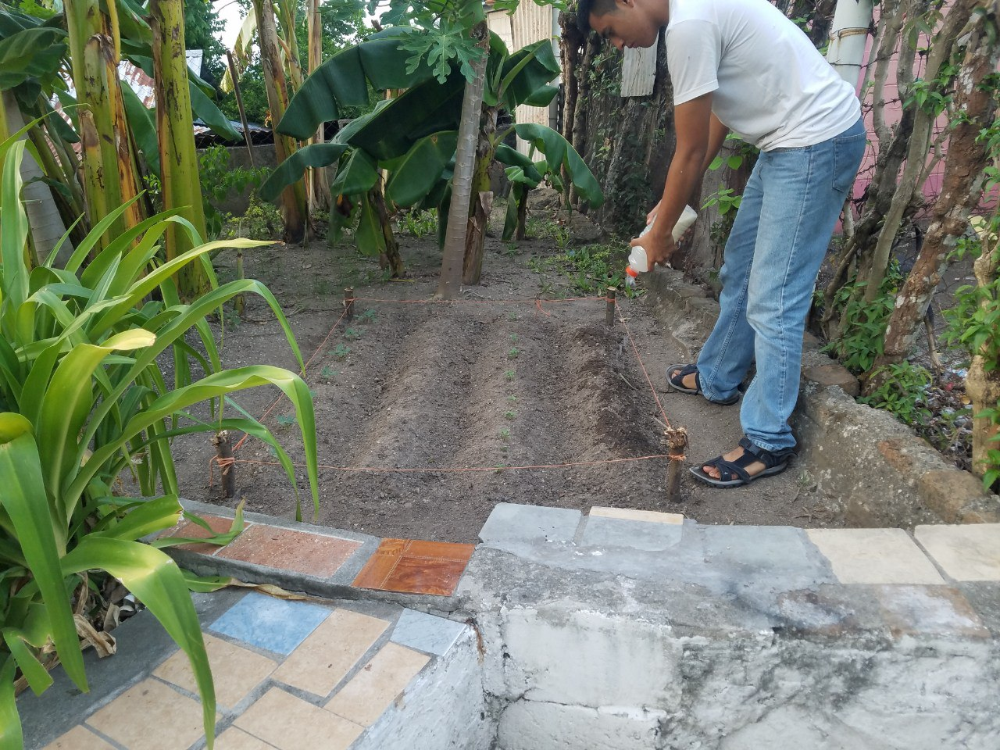
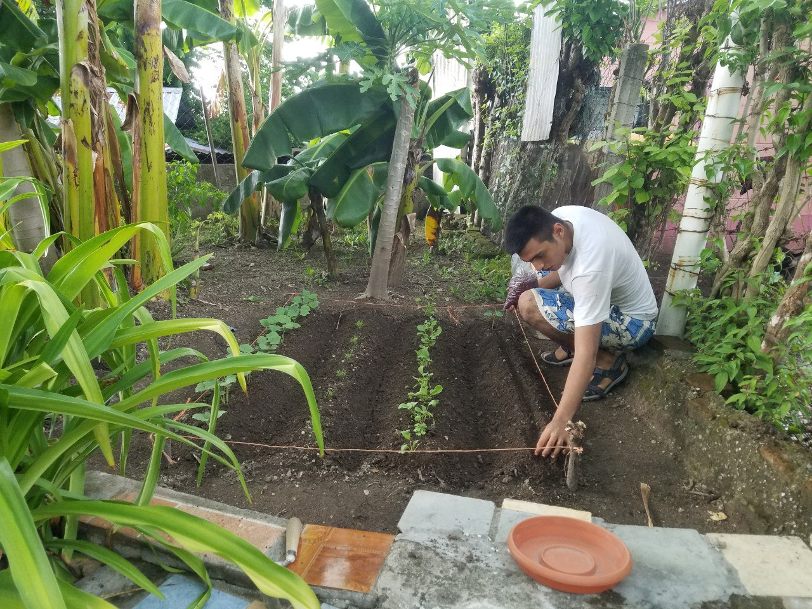
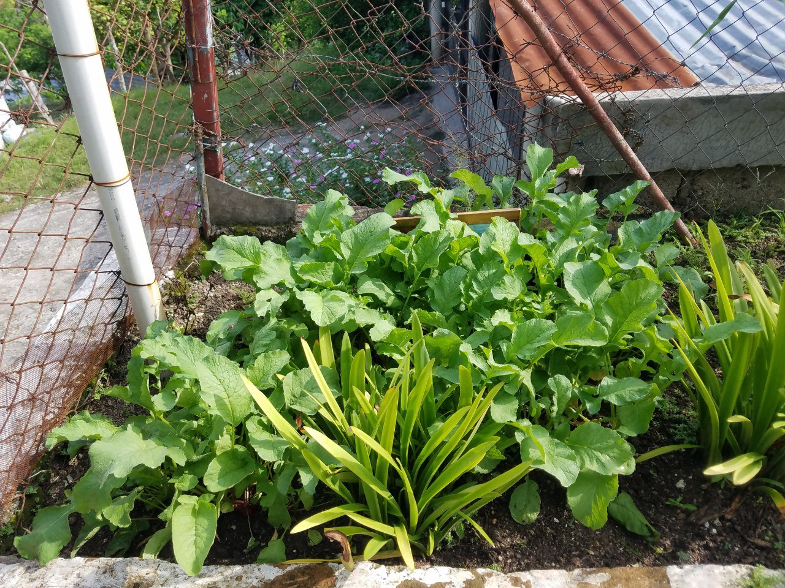
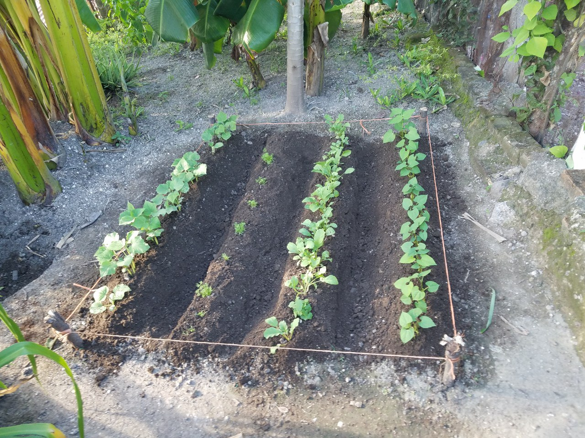

Hola mundo
Algunas obras de arte del mundo de los videojuegos.❤️


Algunas obras de arte del mundo de los videojuegos.❤️
En el TES, hicimos un huerto familiar, era obligatorio, ya qué era
requisito para graduarme del colegio. Estuve trabajando arduamente
para hacer mi huerto, nunca había hecho uno en toda mi vida, y tenía
qué hacerlo porqué si no, no me graduaba. Sembré varias cosas,
frijoles, rábano, zanahoria, pepino, y chile dulce.


Gracias a Dios mi esfuerzo en el huerto estaba dando frutos,
el huerto se mostraba muy fructifero, estaba creciendo bien, y
estaba muy alegre ya qué las hojas del huerto se mostraban sanas y
demás.


Debido a qué el huerto estaba creciendo rápidamente, decidí
plantar otro huerto pequeño en otra parte de mi casa, para así
aprovechar el espacio y hacer un trabajo más profesional y de mayor
calidad. Estaba muy feliz y contento al saber qué mi huerto estaba
creciendo.
Los tacuasines son animales muy curiosos, y a veces, pueden ser muy
molestos, ya qué se meten en los huertos y se comen las plantas,
atentan con la vida de otros animalitos cómo ser las gallinas, y
demás. Sin embargo, este tacuasin eligió el huerto equivocado.